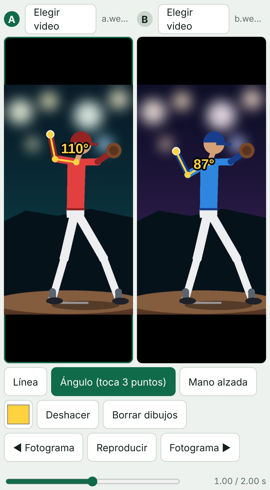

Cómo usar Form Note
Revisa la técnica de béisbol con video. Avanza un clip fotograma a fotograma, dibuja líneas, mide ángulos y compara dos clips lado a lado. Tus videos se quedan en tu dispositivo.
Abrir la app
Los clips de ejemplo son ilustraciones, no jugadores reales.
Primeros pasos
Elige un video
Toca Elegir video y selecciona un clip de tu teléfono. Para comparar dos clips, toca primero Comparar dos videos y luego elige un segundo video para B. Los videos horizontales y verticales se ajustan automáticamente.
Encuentra el momento
Toca Fotograma ▶ o ◀ Fotograma para avanzar o retroceder un fotograma. Arrastra la barra para saltar a otro punto, o toca Reproducir y elige una velocidad de 0.1x a 1x. Con Sincronizar A y B activado, los dos videos se mueven juntos.

Cada toque en Fotograma ▶ avanza un fotograma. Los jugadores son ilustraciones.
Dibuja y mide
Elige una herramienta y dibuja sobre el video. Tus dibujos se quedan en pantalla mientras avanzas por los fotogramas, así puedes comprobar si una posición cambia.
Guarda una imagen
Toca Guardar imagen para guardar una imagen fija con tus anotaciones. El nombre de la app, su enlace y un código QR se añaden abajo, para que quien la reciba pueda abrir la app. En los teléfonos compatibles, toca Compartir para enviar la imagen directamente a una app de mensajería, como WhatsApp. El enlace de la app se envía también como texto, aunque que aparezca depende de la app de mensajería. También puedes mantener presionada la imagen para guardarla o hacer una captura de pantalla.
Herramientas de dibujo
| Línea | Arrastra de un punto a otro. Sirve para comprobar una recta, por ejemplo una línea vertical que pase por la cabeza. |
|---|---|
| Ángulo (toca 3 puntos) | Toca tres puntos en orden. El ángulo se mide en el punto del medio y aparece sobre el video. Para el codo, toca hombro, codo y muñeca. |
| Mano alzada | Arrastra para dibujar cualquier forma. |
| Color | Cambia el color de la siguiente línea que dibujes. |
| Deshacer | Quita el último punto o dibujo del video seleccionado. |
| Borrar dibujos | Quita todos los dibujos del video seleccionado. |
Ajustes de reproducción
| Velocidad | 0.1x, 0.25x, 0.5x o 1x. Con velocidades más lentas es más fácil ver los movimientos rápidos. |
|---|---|
| fps | Ponlo igual que los fotogramas por segundo con los que grabaste (por ejemplo 30, 60 o 240). Define cuánto avanza Fotograma, así que un toque debe ser un fotograma de tu video. |
| Comparar dos videos | Muestra los videos A y B juntos. Toca Una sola vista para volver a un solo video. |
| Sincronizar A y B | Si está activado, Reproducir, Fotograma y la barra controlan los dos videos. Desactívalo para mover solo un video. Si los videos empiezan en momentos distintos, desactívalo, ajusta cada uno a la escena que quieres comparar y vuelve a activarlo: se moverán manteniendo la diferencia entre ambos. |
Consejos para grabar
- Apoya el teléfono en un trípode o en una superficie estable para que la imagen no tiemble.
- Graba siempre desde el mismo lugar y con el mismo ángulo, para comparar los clips con facilidad.
- Graba de lado para la técnica de lanzar y de bateo, con todo el cuerpo dentro del cuadro.
- Usa 60 fps o más si tu teléfono lo permite. El modo de cámara lenta es aún mejor para swings y lanzamientos rápidos.
- Con buena luz y un fondo sencillo, el cuerpo se ve mejor.
Preguntas
¿Se suben mis videos a algún sitio?
No. Los videos se abren y se procesan en tu dispositivo, dentro del navegador. Form Note no los envía a ningún servidor.
¿Se puede abrir la app desde la imagen guardada?
Sí. Abre la imagen guardada en el mismo teléfono y mantén presionado el código QR (en Google Fotos o Google Lens, toca el enlace detectado), o escanéalo con la cámara de otro teléfono. El enlace escrito junto al código QR forma parte de la imagen, así que no se puede tocar. El código QR funciona en una imagen guardada o en una captura de pantalla, siempre que la imagen siga siendo lo bastante grande para leerse. Si usas Compartir, el enlace se envía también como texto y muchas apps de mensajería lo hacen tocable.
No veo el botón Compartir.
El botón Compartir solo aparece en los navegadores que pueden compartir imágenes. Si no lo ves, mantén presionada la imagen para guardarla o haz una captura de pantalla, y envía esa imagen.
¿Qué incluye la imagen guardada?
El fotograma o los fotogramas que estabas viendo, con tus dibujos y ángulos. Abajo se añade una barra con el nombre de la app, su enlace y un código QR.
El video tarda mucho en cargar.
Los archivos grandes, como clips largos en 4K, pueden tardar en abrirse. Prueba a grabar en 1080p o recorta el clip a la parte que necesitas.
El video no se reproduce.
Algunos videos del teléfono usan un formato que no todos los dispositivos pueden reproducir, sobre todo los de HEVC (H.265) del iPhone. En iPhone, elige Ajustes → Cámara → Formatos → Más compatible y vuelve a grabar, o convierte el video a MP4 con H.264. Luego elígelo de nuevo.
¿Los dibujos siguen al video?
No. Los dibujos quedan fijos en la zona de imagen, no en cada fotograma. Se mantienen en el mismo lugar al avanzar por el video, así puedes comparar el movimiento del cuerpo con una línea fija. Cada panel guarda sus propios dibujos, y se borran al elegir otro video.
Fotograma no avanza de uno en uno.
Revisa el ajuste de fps. Debe coincidir con los fotogramas por segundo con los que grabaste. Si es mayor que el real del video, cada toque avanza menos de un fotograma.
Mi teléfono siempre abre la misma carpeta al elegir un video.
El selector de archivos lo controla tu teléfono, no la app. Prueba la vista Recientes o Videos del selector para encontrar tus clips sin recorrer carpetas.
¿Se quedan los dibujos en el video?
Se quedan mientras la página está abierta. Si recargas la página o eliges otro video, se borran. Usa Guardar imagen para conservar una imagen.